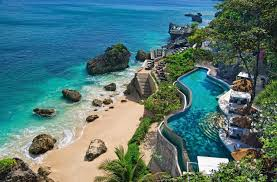

Paris

Paris, the capital of France, is known as the "City of Light" and is famous for its iconic landmarks like the Eiffel Tower, Louvre Museum, and Notre-Dame Cathedral. It is a global hub for art, fashion, cuisine, and history, with charming streets, romantic Seine River views, and world-class cafés. The city blends rich history with modern elegance, making it one of the most visited places in the world.
Click here to learn more about Paris
Bali

Bali, an Indonesian island, is famous for its stunning beaches, lush rice terraces, vibrant culture, and spiritual atmosphere. Known as the "Island of the Gods," it offers world-class surfing, ancient temples, and a lively arts scene. Popular spots include Ubud, Seminyak, and Uluwatu. Bali’s warm hospitality, exotic cuisine, and breathtaking landscapes make it a top travel destination.
Click here to learn more about Bali
New York
 New York City, often called the "Big Apple," is a global hub for finance, culture, and entertainment. Known for its iconic landmarks like Times Square, the Statue of Liberty, Central Park, and Broadway, it is a city that never sleeps. With its diverse population, world-class museums, skyscrapers, and vibrant nightlife, NYC is a melting pot of cultures and a top destination for travelers worldwide.
New York City, often called the "Big Apple," is a global hub for finance, culture, and entertainment. Known for its iconic landmarks like Times Square, the Statue of Liberty, Central Park, and Broadway, it is a city that never sleeps. With its diverse population, world-class museums, skyscrapers, and vibrant nightlife, NYC is a melting pot of cultures and a top destination for travelers worldwide.
Click here to learn more about New York
Plan Your Trip
Know more about your tour
Back to the top